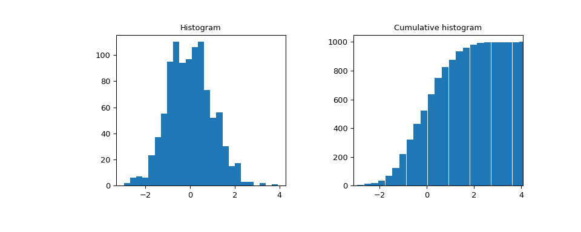

scipy.stats.cumfreq¶
-
scipy.stats.cumfreq(a, numbins=10, defaultreallimits=None, weights=None)[source]¶ Return a cumulative frequency histogram, using the histogram function.
A cumulative histogram is a mapping that counts the cumulative number of observations in all of the bins up to the specified bin.
- Parameters
- aarray_like
Input array.
- numbinsint, optional
The number of bins to use for the histogram. Default is 10.
- defaultreallimitstuple (lower, upper), optional
The lower and upper values for the range of the histogram. If no value is given, a range slightly larger than the range of the values in a is used. Specifically
(a.min() - s, a.max() + s), wheres = (1/2)(a.max() - a.min()) / (numbins - 1).- weightsarray_like, optional
The weights for each value in a. Default is None, which gives each value a weight of 1.0
- Returns
- cumcountndarray
Binned values of cumulative frequency.
- lowerlimitfloat
Lower real limit
- binsizefloat
Width of each bin.
- extrapointsint
Extra points.
Examples
>>> import matplotlib.pyplot as plt >>> from scipy import stats >>> x = [1, 4, 2, 1, 3, 1] >>> res = stats.cumfreq(x, numbins=4, defaultreallimits=(1.5, 5)) >>> res.cumcount array([ 1., 2., 3., 3.]) >>> res.extrapoints 3
Create a normal distribution with 1000 random values
>>> rng = np.random.RandomState(seed=12345) >>> samples = stats.norm.rvs(size=1000, random_state=rng)
Calculate cumulative frequencies
>>> res = stats.cumfreq(samples, numbins=25)
Calculate space of values for x
>>> x = res.lowerlimit + np.linspace(0, res.binsize*res.cumcount.size, ... res.cumcount.size)
Plot histogram and cumulative histogram
>>> fig = plt.figure(figsize=(10, 4)) >>> ax1 = fig.add_subplot(1, 2, 1) >>> ax2 = fig.add_subplot(1, 2, 2) >>> ax1.hist(samples, bins=25) >>> ax1.set_title('Histogram') >>> ax2.bar(x, res.cumcount, width=res.binsize) >>> ax2.set_title('Cumulative histogram') >>> ax2.set_xlim([x.min(), x.max()])
>>> plt.show()
